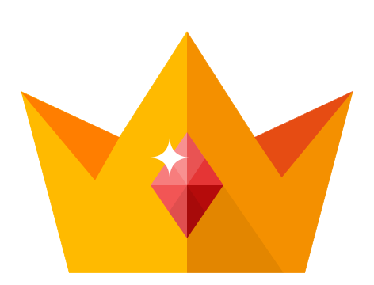

2015-04-05 고등학교 2학년
임진록
PC Game
HTML5 / JavaScript / Css3 / Jquery
제작인원 : 2명 / 프로그래머 담당
2015 서울기능경기대회 게임개발 우수상 수상
기능경기대회 주제 슈팅게임인 임진록
임진왜란의 시대적배경과 미래의 모습을 접목시켜서 재구성한 게임이다.
다양한 적들을 물리치고 거북선을 완성해 왜군을 물리치면 게임에서 승리한다.
스토리와 함께 다양한 미니게임이 존재하고, 상점, 랭킹 등등 콘텐츠들이 많이 존재한다.
삼각함수를 이용해 왕복, 원 이동을 구현해 몬스터들의 패턴을 제작했다.
게임이 끝나고 나오는 랭킹 씬은 C++ 파일 입출력을 사용하여 효율적으로 개발하였다.